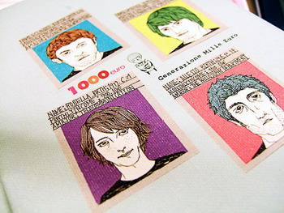

1000 evra
sobota, 1. december 2007. u 5:14 PM
Piše: La Lara
Rubrike: Creative Economy | Lifestyle | Zdrav Stav
Da li znate šta je Generacija hiljadu evra?
"A novel published free on the Internet has become a surprise hit in Italy, downloaded by thousands of young people who identify with the main character struggling to survive on a monthly salary of 1000 euros."
Šta karakteriše ove ljude?
"You’re young, you speak several languages, you have one or more degrees and you want to get ahead in life. Not just in France, but especially in Spain and Italy, this gets more difficult by the day. Hardworking highly educated people in their twenties and thirties, generation ‘Low Cost’, can’t afford a house, a family and fun things to do. They get stranded in low paid and temporary jobs. They feel like disposable commodities."
O ovom fenomenu piše i nedeljnik Evropa u novom broju. (Evropa je od skora sa novim uredništvom i novom koncepcijom, i stalno sve bolja). Ekonomsko objašnjenje ove pojave: "Tačno je da je u Evropi fleksibilnost smanjila nezaposlenost, ali nije uspela da spreči njenu zloupotrebu pretvarajući je u privremeni radni odnos. Naime, osoba može da promeni i četiri radna mesta godišnje bez ikakve garancije da će po isteku jednog ugovora odmah naći novi posao, a za to vreme nema nikakvu finansijsku podršku. Fleksibilnost danas zapravo nimalo ne štiti radnike, već samo poslodavce."
Jedan od načina na koji mladi obrzovani ljudi koji imaju ovakve teškoće pokušavaju da neutrališu problem jeste okretanje projektma iz sfere kreativne ekonomije.
Na sajtu projekta Generazione 1000 Euro je i čitav niz tekstova i priloga objavljenih u najpoznatijim medijima.
Koliko mi znamo i razmemo ceo ovaj fenomen?
 RSS feed
RSS feed
 sadržaji se objavljuju pod
sadržaji se objavljuju pod
Komentari
Sve ćemo ga više znati i sve manje razumeti. I ne verume da ga i oni više razumeju od nas. Priroda tržišta je NePrirodna.
etotako | 01.12.07 20:05
hm, znam neke koji su promenili po 4-5 poslova u poslednjih par godina, ali bas za godinu dana... a i cifre su dosta dobre
ljube | 01.12.07 21:20
Za naše uslove bi to bila vrlo rasprostranjena generacija 300 evra. Plate su mizerno male, možeš da sanjaš o tome da kupiš stan ili kuću, a budućnost izgleda sivlje nego ikad.
elektrokuhinja | 02.12.07 15:29
Citala sam nesto o tome. Nije stvar u iznosu plate nego u nesigurnosti posla i uslova rada. U tekstu u Evropi nije lose obradjeno. Ali, ne tice se ni samo mladih. Sad, sa obzirom na nove uslove rada, potrebni su i drugi oblici organizovanja radnika ("prekarijata"). Euro Mayday je mreza protesta u mnogim gradovima Evrope, sa dosta razlicitom ikonografijom od
sindikalnih protesta. U Srbiji, doduse, nemamo ni jedne ni druge. I sve je to pocelo u Italiji, gde su usvojili i svog sveca (San Precario). Itd. itd...
Pozdrav Yahtiju
Ana | 02.12.07 22:47
Na neki način stara priča ispričana kroz novi medij, biće još i jednog i drugog. Živo me zanima da li će internet knjige biti bitno različite od štampanih (jezik, forma, tematika...)?
ubipacijentic | 03.12.07 07:04
@Ciao, Ana:). @Ubipacijentic, ja nisam primetila neku razliku izmedju te dve vrste knjiga. Meni se cini da je ovaj fenomen novi, ne znam na sta ti mislis. Koliko znam nije se ranije desavalo da ljudi sa znanjem nekoliko jezika, mastera, odradjenim staziranjima itd. ne mogu da nadju posao duzi od nekoliko meseci
la lara | 03.12.07 08:11
Cini mi se da je ovo donekle i posledica hiperprodukcije diploma, na to sam mislio da je stara prica. Okolnosti su nove, naravno, i zanimljive - npr. zasto su bas Italija i Spanija (navodno) tako pogodjene?
ubipacijentic | 03.12.07 09:56
Ja isto kao Ljuba, verovatno iste ljude)
Kod nas je def. neuskladjenost tržišta i broja diploma sa određenih fakulteta, valjda bi malo valjalo menjati brojna stanja pri upisu
redsandra | 03.12.07 16:16
Ubipacijentic, vidim danas u novom Newsweeku (http://www.newsweek.com/id/73234) kako su italijanski politicari medju najstarijima, te da je to moguci uzrok politickih problema u Italiji. Kakvo li je tek objansjenje za ekonomiju i trziste rada, ko bi znao
la lara | 03.12.07 18:17